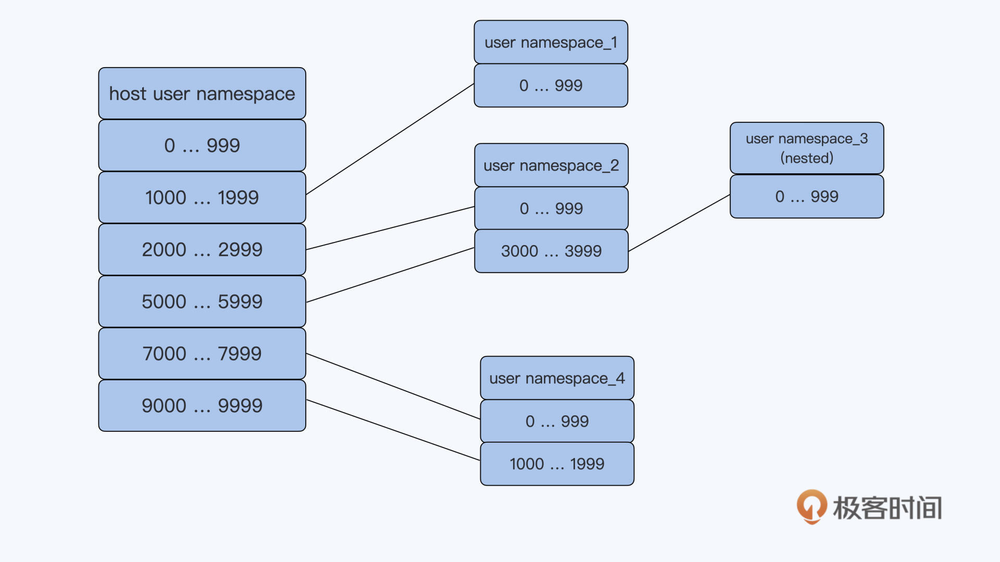

- 00 开篇词 一个态度两个步骤，成为容器实战高手.md.html
- 01 认识容器：容器的基本操作和实现原理.md.html
- 02 理解进程（1）：为什么我在容器中不能kill 1号进程？.md.html
- 03 理解进程（2）：为什么我的容器里有这么多僵尸进程？.md.html
- 04 理解进程（3）：为什么我在容器中的进程被强制杀死了？.md.html
- 05 容器CPU（1）：怎么限制容器的CPU使用？.md.html
- 06 容器CPU（2）：如何正确地拿到容器CPU的开销？.md.html
- 07 Load Average：加了CPU Cgroup限制，为什么我的容器还是很慢？.md.html
- 08 容器内存：我的容器为什么被杀了？.md.html
- 09 Page Cache：为什么我的容器内存使用量总是在临界点.md.html
- 10 Swap：容器可以使用Swap空间吗？.md.html
- 11 容器文件系统：我在容器中读写文件怎么变慢了.md.html
- 12 容器文件Quota：容器为什么把宿主机的磁盘写满了？.md.html
- 13 容器磁盘限速：我的容器里磁盘读写为什么不稳定.md.html
- 14 容器中的内存与IO：容器写文件的延时为什么波动很大？.md.html
- 15 容器网络：我修改了procsysnet下的参数，为什么在容器中不起效？.md.html
- 16 容器网络配置（1）：容器网络不通了要怎么调试.md.html
- 17 容器网络配置（2）：容器网络延时要比宿主机上的高吗.md.html
- 18 容器网络配置（3）：容器中的网络乱序包怎么这么高？.md.html
- 19 容器安全（1）：我的容器真的需要privileged权限吗.md.html
- 20 容器安全（2）：在容器中，我不以root用户来运行程序可以吗？.md.html
- 加餐01 案例分析：怎么解决海量IPVS规则带来的网络延时抖动问题？.md.html
- 加餐02 理解perf：怎么用perf聚焦热点函数？.md.html
- 加餐03 理解ftrace（1）：怎么应用ftrace查看长延时内核函数？.md.html
- 加餐04 理解ftrace（2）：怎么理解ftrace背后的技术tracepoint和kprobe？.md.html
- 加餐05 eBPF：怎么更加深入地查看内核中的函数？.md.html
- 加餐06 BCC：入门eBPF的前端工具.md.html
- 加餐福利 课后思考题答案合集.md.html
- 结束语 跳出舒适区，突破思考的惰性.md.html
20 容器安全（2）：在容器中，我不以root用户来运行程序可以吗？
你好，我是程远。
在上一讲里，我们学习了 Linux capabilities 的概念，也知道了对于非 privileged 的容器，容器中 root 用户的 capabilities 是有限制的，因此容器中的 root 用户无法像宿主机上的 root 用户一样，拿到完全掌控系统的特权。
那么是不是让非 privileged 的容器以 root 用户来运行程序，这样就能保证安全了呢？这一讲，我们就来聊一聊容器中的 root 用户与安全相关的问题。
问题再现
说到容器中的用户（user），你可能会想到，在 Linux Namespace 中有一项隔离技术，也就是 User Namespace。
不过在容器云平台 Kubernetes 上目前还不支持 User Namespace，所以我们先来看看在没有 User Namespace 的情况下，容器中用 root 用户运行，会发生什么情况。
首先，我们可以用下面的命令启动一个容器，在这里，我们把宿主机上 /etc 目录以 volume 的形式挂载到了容器中的 /mnt 目录下面。
# docker run -d --name root_example -v /etc:/mnt centos sleep 3600
然后，我们可以看一下容器中的进程"sleep 3600"，它在容器中和宿主机上的用户都是 root，也就是说，容器中用户的 uid/gid 和宿主机上的完全一样。
# docker exec -it root_example bash -c "ps -ef | grep sleep"
root 1 0 0 01:14 ? 00:00:00 /usr/bin/coreutils --coreutils-prog-shebang=sleep /usr/bin/sleep 3600
# ps -ef | grep sleep
root 5473 5443 0 18:14 ? 00:00:00 /usr/bin/coreutils --coreutils-prog-shebang=sleep /usr/bin/sleep 3600
虽然容器里 root 用户的 capabilities 被限制了一些，但是在容器中，对于被挂载上来的 /etc 目录下的文件，比如说 shadow 文件，以这个 root 用户的权限还是可以做修改的。
# docker exec -it root_example bash
[[email protected] /]# ls /mnt/shadow -l
---------- 1 root root 586 Nov 26 13:47 /mnt/shadow
[[email protected] /]# echo "hello" >> /mnt/shadow
接着我们看看后面这段命令输出，可以确认在宿主机上文件被修改了。
# tail -n 3 /etc/shadow
grafana:!!:18437::::::
tcpdump:!!:18592::::::
hello
这个例子说明容器中的 root 用户也有权限修改宿主机上的关键文件。
当然在云平台上，比如说在 Kubernetes 里，我们是可以限制容器去挂载宿主机的目录的。
不过，由于容器和宿主机是共享 Linux 内核的，一旦软件有漏洞，那么容器中以 root 用户运行的进程就有机会去修改宿主机上的文件了。比如 2019 年发现的一个 RunC 的漏洞 CVE-2019-5736， 这导致容器中 root 用户有机会修改宿主机上的 RunC 程序，并且容器中的 root 用户还会得到宿主机上的运行权限。
问题分析
对于前面的问题，接下来我们就来讨论一下解决办法，在讨论问题的过程中，也会涉及一些新的概念，主要有三个。
方法一：Run as non-root user（给容器指定一个普通用户）
我们如果不想让容器以 root 用户运行，最直接的办法就是给容器指定一个普通用户 uid。这个方法很简单，比如可以在 docker 启动容器的时候加上"-u"参数，在参数中指定 uid/gid。
具体的操作代码如下：
# docker run -ti --name root_example -u 6667:6667 -v /etc:/mnt centos bash
bash-4.4$ id
uid=6667 gid=6667 groups=6667
bash-4.4$ ps -ef
UID PID PPID C STIME TTY TIME CMD
6667 1 0 1 01:27 pts/0 00:00:00 bash
6667 8 1 0 01:27 pts/0 00:00:00 ps -ef
还有另外一个办法，就是我们在创建容器镜像的时候，用 Dockerfile 为容器镜像里建立一个用户。
为了方便你理解，我还是举例说明。就像下面例子中的 nonroot，它是一个用户名，我们用 USER 关键字来指定这个 nonroot 用户，这样操作以后，容器里缺省的进程都会以这个用户启动。
这样在运行 Docker 命令的时候就不用加"-u"参数来指定用户了。
# cat Dockerfile
FROM centos
RUN adduser -u 6667 nonroot
USER nonroot
# docker build -t registry/nonroot:v1 .
…
# docker run -d --name root_example -v /etc:/mnt registry/nonroot:v1 sleep 3600
050809a716ab0a9481a6dfe711b332f74800eff5fea8b4c483fa370b62b4b9b3
# docker exec -it root_example bash
[[email protected] /]$ id
uid=6667(nonroot) gid=6667(nonroot) groups=6667(nonroot)
[[email protected] /]$ ps -ef
UID PID PPID C STIME TTY TIME CMD
nonroot 1 0 0 01:43 ? 00:00:00 /usr/bin/coreutils --coreutils-prog-shebang=sleep /usr/bin/sleep 3600
好，在容器中使用普通用户运行之后，我们再看看，现在能否修改被挂载上来的 /etc 目录下的文件? 显然，现在不可以修改了。
[[email protected] /]$ echo "hello" >> /mnt/shadow
bash: /mnt/shadow: Permission denied
那么是不是只要给容器中指定了一个普通用户，这个问题就圆满解决了呢？其实在云平台上，这么做还是会带来别的问题，我们一起来看看。
由于用户 uid 是整个节点中共享的，那么在容器中定义的 uid，也就是宿主机上的 uid，这样就很容易引起 uid 的冲突。
比如说，多个客户在建立自己的容器镜像的时候都选择了同一个 uid 6667。那么当多个客户的容器在同一个节点上运行的时候，其实就都使用了宿主机上 uid 6667。
我们都知道，在一台 Linux 系统上，每个用户下的资源是有限制的，比如打开文件数目（open files）、最大进程数目（max user processes）等等。一旦有很多个容器共享一个 uid，这些容器就很可能很快消耗掉这个 uid 下的资源，这样很容易导致这些容器都不能再正常工作。
要解决这个问题，必须要有一个云平台级别的 uid 管理和分配，但选择这个方法也要付出代价。因为这样做是可以解决问题，但是用户在定义自己容器中的 uid 的时候，他们就需要有额外的操作，而且平台也需要新开发对 uid 平台级别的管理模块，完成这些事情需要的工作量也不少。
方法二：User Namespace（用户隔离技术的支持）
那么在没有使用 User Namespace 的情况，对于容器平台上的用户管理还是存在问题。你可能会想到，我们是不是应该去尝试一下 User Namespace?
好的，我们就一起来看看使用 User Namespace 对解决用户管理问题有没有帮助。首先，我们简单了解一下User Namespace的概念。
User Namespace 隔离了一台 Linux 节点上的 User ID（uid）和 Group ID（gid），它给 Namespace 中的 uid/gid 的值与宿主机上的 uid/gid 值建立了一个映射关系。经过 User Namespace 的隔离，我们在 Namespace 中看到的进程的 uid/gid，就和宿主机 Namespace 中看到的 uid 和 gid 不一样了。
你可以看下面的这张示意图，应该就能很快知道 User Namespace 大概是什么意思了。比如 namespace_1 里的 uid 值是 0 到 999，但其实它在宿主机上对应的 uid 值是 1000 到 1999。
还有一点你要注意的是，User Namespace 是可以嵌套的，比如下面图里的 namespace_2 里可以再建立一个 namespace_3，这个嵌套的特性是其他 Namespace 没有的。

我们可以启动一个带 User Namespace 的容器来感受一下。这次启动容器，我们用一下podman这个工具，而不是 Docker。
跟 Docker 相比，podman 不再有守护进程 dockerd，而是直接通过 fork/execve 的方式来启动一个新的容器。这种方式启动容器更加简单，也更容易维护。
Podman 的命令参数兼容了绝大部分的 docker 命令行参数，用过 Docker 的同学也很容易上手 podman。你感兴趣的话，可以跟着这个手册在你自己的 Linux 系统上装一下 podman。
那接下来，我们就用下面的命令来启动一个容器：
# podman run -ti -v /etc:/mnt --uidmap 0:2000:1000 centos bash
我们可以看到，其他参数和前面的 Docker 命令是一样的。
这里我们在命令里增加一个参数，"--uidmap 0:2000:1000"，这个是标准的 User Namespace 中 uid 的映射格式："ns_uid:host_uid:amount"。
那这个例子里的"0:2000:1000"是什么意思呢？我给你解释一下。
第一个 0 是指在新的 Namespace 里 uid 从 0 开始，中间的那个 2000 指的是 Host Namespace 里被映射的 uid 从 2000 开始，最后一个 1000 是指总共需要连续映射 1000 个 uid。
所以，我们可以得出，这个容器里的 uid 0 是被映射到宿主机上的 uid 2000 的。这一点我们可以验证一下。
首先，我们先在容器中以用户 uid 0 运行一下 sleep 这个命令：
# id
uid=0(root) gid=0(root) groups=0(root)
# sleep 3600
然后就是第二步，到宿主机上查看一下这个进程的 uid。这里我们可以看到，进程 uid 的确是 2000 了。
# ps -ef |grep sleep
2000 27021 26957 0 01:32 pts/0 00:00:00 /usr/bin/coreutils --coreutils-prog-shebang=sleep /usr/bin/sleep 3600
第三步，我们可以再回到容器中，仍然以容器中的 root 对被挂载上来的 /etc 目录下的文件做操作，这时可以看到操作是不被允许的。
# echo "hello" >> /mnt/shadow
bash: /mnt/shadow: Permission denied
# id
uid=0(root) gid=0(root) groups=0(root)
好了，通过这些操作以及和前面 User Namespace 的概念的解释，我们可以总结出容器使用 User Namespace 有两个好处。
第一，它把容器中 root 用户（uid 0）映射成宿主机上的普通用户。
作为容器中的 root，它还是可以有一些 Linux capabilities，那么在容器中还是可以执行一些特权的操作。而在宿主机上 uid 是普通用户，那么即使这个用户逃逸出容器 Namespace，它的执行权限还是有限的。
第二，对于用户在容器中自己定义普通用户 uid 的情况，我们只要为每个容器在节点上分配一个 uid 范围，就不会出现在宿主机上 uid 冲突的问题了。
因为在这个时候，我们只要在节点上分配容器的 uid 范围就可以了，所以从实现上说，相比在整个平台层面给容器分配 uid，使用 User Namespace 这个办法要方便得多。
这里我额外补充一下，前面我们说了 Kubernetes 目前还不支持 User Namespace，如果你想了解相关工作的进展，可以看一下社区的这个PR。
方法三：rootless container（以非 root 用户启动和管理容器）
前面我们已经讨论了，在容器中以非 root 用户运行进程可以降低容器的安全风险。除了在容器中使用非 root 用户，社区还有一个 rootless container 的概念。
这里 rootless container 中的"rootless"不仅仅指容器中以非 root 用户来运行进程，还指以非 root 用户来创建容器，管理容器。也就是说，启动容器的时候，Docker 或者 podman 是以非 root 用户来执行的。
这样一来，就能进一步提升容器中的安全性，我们不用再担心因为 containerd 或者 RunC 里的代码漏洞，导致容器获得宿主机上的权限。
我们可以参考 redhat blog 里的这篇文档， 在宿主机上用 redhat 这个用户通过 podman 来启动一个容器。在这个容器中也使用了 User Namespace，并且把容器中的 uid 0 映射为宿主机上的 redhat 用户了。
$ id
uid=1001(redhat) gid=1001(redhat) groups=1001(redhat)
$ podman run -it ubi7/ubi bash ### 在宿主机上以redhat用户启动容器
[[email protected] /]# id ### 容器中的用户是root
uid=0(root) gid=0(root) groups=0(root)
[[email protected] /]# sleep 3600 ### 在容器中启动一个sleep 进程
# ps -ef |grep sleep ###在宿主机上查看容器sleep进程对应的用户
redhat 29433 29410 0 05:14 pts/0 00:00:00 sleep 3600
目前 Docker 和 podman 都支持了 rootless container，Kubernetes 对rootless container 支持的工作也在进行中。
重点小结
我们今天讨论的内容是 root 用户与容器安全的问题。
尽管容器中 root 用户的 Linux capabilities 已经减少了很多，但是在没有 User Namespace 的情况下，容器中 root 用户和宿主机上的 root 用户的 uid 是完全相同的，一旦有软件的漏洞，容器中的 root 用户就可以操控整个宿主机。
为了减少安全风险，业界都是建议在容器中以非 root 用户来运行进程。不过在没有 User Namespace 的情况下，在容器中使用非 root 用户，对于容器云平台来说，对 uid 的管理会比较麻烦。
所以，我们还是要分析一下 User Namespace，它带来的好处有两个。一个是把容器中 root 用户（uid 0）映射成宿主机上的普通用户，另外一个好处是在云平台里对于容器 uid 的分配要容易些。
除了在容器中以非 root 用户来运行进程外，Docker 和 podman 都支持了 rootless container，也就是说它们都可以以非 root 用户来启动和管理容器，这样就进一步降低了容器的安全风险。
思考题
我在这一讲里提到了 rootless container，不过对于 rootless container 的支持，还存在着不少的难点，比如容器网络的配置、Cgroup 的配置，你可以去查阅一些资料，看看 podman 是怎么解决这些问题的。
欢迎你在留言区提出你的思考和疑问。如果这一讲对你有帮助，也欢迎转发给你的同事、朋友，一起交流学习。